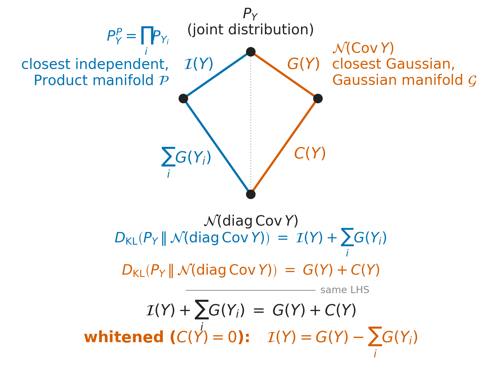
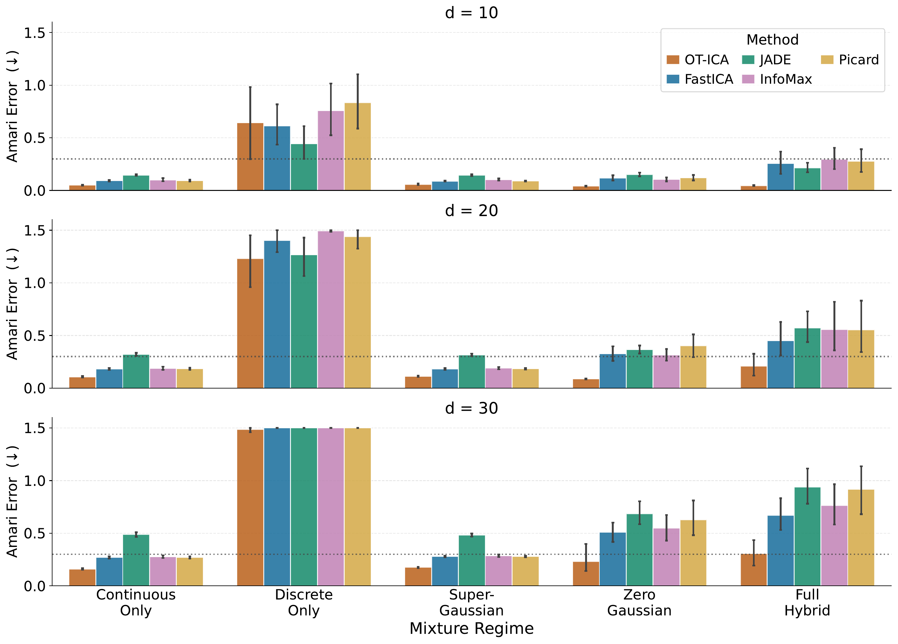

Ashutosh Jha · Joachim Grammig · Michel Besserve · Simon Buchholz
Theorem (Linear ICA Identifiability). [Jutten & Herault 1985; Comon 1994]

Theorem ($W_2$ upper bound). For mutually independent sources $Z_1,\dots,Z_d$ and weights $\mathbf{b}=(b_1,\dots,b_d)$ with $\sum_{i=1}^d b_i^2=1$ (the unit sphere):
$$W_2^2(\mathbf{b}\cdot\mathbf{Z}, \Gamma) \le \sum_{i=1}^d b_i^2\, W_2^2(Z_i, \Gamma)$$
Theorem (strict inequality). If at most one source is Gaussian and $\ge\!2$ weights $b_i$ are nonzero, the bound above is strict:
$$W_2^2(\mathbf{b}\cdot\mathbf{Z}, \Gamma) < \sum_{i=1}^d b_i^2\, W_2^2(Z_i, \Gamma)$$
Laplace density (unit variance): $f_L(x) = \tfrac{1}{\sqrt2}e^{-\sqrt2|x|}$
Uniform density (unit variance): $f_U(x) = \tfrac{1}{2\sqrt3}, \ x\in[-\sqrt3,\sqrt3]$
General mixture: $\mathbf{b}\cdot\mathbf{Z} = \sum_i b_i Z_i$
Here, two sources on the unit circle: $y(\boldsymbol{\theta}) = s_1\cos\boldsymbol{\theta} + s_2\sin\boldsymbol{\theta},\ \ s_1\!\sim\! f_L,\ s_2\!\sim\! f_U$
| Method | Contrast function |
|---|---|
| FastICA | logcosh negentropy approximation $G(x)=\tfrac1a\log\cosh(ax)$ [Hyvärinen et al. 2001; Amari et al. 1996] |
| JADE | joint diagonalization of 4th-order cumulant matrices [Cardoso & Souloumiac 1993] |
| InfoMax | parametric log-likelihood, logistic score function [Bell & Sejnowski 1995] |
| Picard | same log-likelihood, adaptive nonlinearity + provably converging solver [Ablin et al. 2018] |
| OT-ICA (ours) | $W_2^2$ distance to a standard Gaussian, a true metric, not a proxy contrast for entropy/negentropy/higher moments. |
Every proxy above replaces the true non-Gaussianity $G(Y_i)$ with something estimable from low-order statistics or a fixed density assumption; each fails on specific source geometries (next: what that looks like).
A toy 2D mixture (Laplace and Uniform), already in source-aligned coordinates: true axes at 0° and 90°.

In the order they're applied, once per optimization step (analytical targets are precomputed once):
| Technique | What it solves |
|---|---|
| Analytical Gaussian targets | precomputed once: replaces sampled quantile targets with their exact bin expectation, removing target-approximation noise |
| Batched restarts + stochastic mini-batching | parallelizes random restarts and subsamples each step, helping escape spurious local optima in non-convex/discrete landscapes |
| Gaussian dithering | injects small noise ($\sigma^2{=}0.01$) into the batch before sorting, smoothing discrete step-function CDFs into differentiable curves [Schuchman 1964] |
| Riemannian gradient ascent | projects the Euclidean gradient onto the tangent space of $\mathcal{O}$, then steps along it, respecting the orthogonality constraint [Absil et al. 2008] |
| L-BFGS (quasi-Newton) | refines that step: the exact Newton Hessian needs a density estimate at the quantile boundary, so L-BFGS approximates curvature from gradient history instead [Liu & Nocedal 1989] |
| Retraction (symmetric decorrelation) | maps the stepped matrix back onto $\mathcal{O}$ via $\mathbf{C}^{-1/2}\mathbf{B}_{\text{step}}$, jointly and symmetrically across all components [Absil et al. 2008] |
backup slides: proofs, full results table, references
Let $\mathbf{N}=(N_1,\dots,N_d)\sim\mathcal{N}(0,I_d)$, independent of $\mathbf{Z}$. Let $T_i$ be the OT map with $(T_i)_\#\Gamma = Z_i$. Construct, from the same $\mathbf{N}$:
$$X = \sum_i b_i T_i(N_i), \qquad Y = \sum_i b_i N_i \sim \Gamma \ \ (\text{since } \textstyle\sum b_i^2=1).$$$(X,Y)$ is a valid coupling of $\mathbf{b}\cdot\mathbf{Z}$ and $\Gamma$, so $W_2^2 \le \mathbb{E}[|X-Y|^2]$. Expanding:
$$|X-Y|^2 = \sum_i b_i^2\big(T_i(N_i)-N_i\big)^2 + \sum_{i\ne j} b_i b_j\big(T_i(N_i)-N_i\big)\big(T_j(N_j)-N_j\big).$$Cross terms vanish in expectation ($N_i \perp N_j$, zero mean). The diagonal terms are exactly $W_2^2(Z_i,\Gamma)$:
$$W_2^2(\mathbf{b}\cdot\mathbf{Z}, \Gamma) \le \sum_i b_i^2\, W_2^2(Z_i,\Gamma). \qquad \blacksquare$$Appendix A1 established the upper bound $W_2^2(\mathbf{b}\cdot\mathbf{Z},\Gamma) \le \sum_i b_i^2\,W_2^2(Z_i,\Gamma)$ via the coupling $X=\sum_i b_i T_i(N_i)$, $Y=\sum_i b_i N_i$. We now use that same coupling as the starting point and ask: when is it tight?
Equality in 1D $W_2^2$ holds iff the two variables are comonotonic (Brenier): $\nabla X(\mathbf{N}) = \lambda(\mathbf{N})\,\nabla Y(\mathbf{N})$.
By Caffarelli regularity, $T_i$ are $C^1$. Differentiating again: the Hessian of $X$ is diagonal ($b_i T_i''(N_i)$ on the diagonal, since $X$ separates additively), while the Hessian of $\lambda(\mathbf{N})\mathbf{b}$ is the rank-1 outer product $\mathbf{b}(\nabla\lambda)^\top$.
Off-diagonal entries: LHS is $0$, RHS is $b_i\,\partial\lambda/\partial N_j$. Since multiple $b_i\ne 0$ in a true mixture, $\nabla\lambda \equiv 0$, so $\lambda$ is a constant and $T_i(x)=\lambda x + c$, a linear map.
A linear map of Gaussian noise is Gaussian. But ICA identifiability assumes $Z_i$ non-Gaussian, a contradiction. So equality cannot hold for a true mixture of non-Gaussian sources, and the bound from A1 is strict:
$$W_2^2(\mathbf{b}\cdot\mathbf{Z},\Gamma) < \sum_i b_i^2\,W_2^2(Z_i,\Gamma) \quad\text{whenever} \ge 2 \text{ weights } b_i\ne 0. \qquad \blacksquare$$Consequence: the maximum of $W_2^2(\mathbf{b}\cdot\mathbf{Z},\Gamma)$ over $\mathbf{b}\in\mathcal{O}$ is attained only when $\mathbf{b}$ aligns with a single source axis.
Let $\mathbf{P} = \mathbf{B}_{\text{est}}\mathbf{A}$ be the global transfer matrix (estimated unmixing composed with the true mixing). Because ICA is identifiable only up to permutation and scaling, the target is a generalized permutation matrix, not the identity.
$$E(\mathbf{P}) = \frac{1}{2d}\sum_{i=1}^d\left(\sum_{j=1}^d \frac{|p_{ij}|}{\max_k|p_{ik}|} - 1\right) + \frac{1}{2d}\sum_{j=1}^d\left(\sum_{i=1}^d \frac{|p_{ij}|}{\max_k|p_{kj}|} - 1\right)$$
| Amari error $E$ | Interpretation |
|---|---|
| $E<0.1$ | Excellent to near-perfect separation |
| $0.1\le E<0.3$ | Good separation; source structure highly recoverable |
| $0.3\le E<0.5$ | Moderate separation; some structural detail lost |
| $E\ge 0.5$ | Degradation; multiple sources remain significantly mixed |
| $E\ge 1.0$ | No meaningful relation to the true sources |
$N=10{,}000$, 10 trials per cell. Clip ceiling at 1.500 (total separation failure). Bold = lowest error per row.
| Regime | $d$ | OT-ICA | FastICA | JADE | InfoMax | Picard |
|---|---|---|---|---|---|---|
| Continuous Only | 10 | 0.051 | 0.092 | 0.146 | 0.100 | 0.093 |
| 20 | 0.107 | 0.183 | 0.321 | 0.188 | 0.184 | |
| 30 | 0.160 | 0.271 | 0.489 | 0.277 | 0.271 | |
| Strictly Super-Gaussian | 10 | 0.058 | 0.089 | 0.146 | 0.103 | 0.090 |
| 20 | 0.113 | 0.183 | 0.316 | 0.190 | 0.184 | |
| 30 | 0.176 | 0.280 | 0.482 | 0.286 | 0.280 | |
| Zero Gaussian | 10 | 0.042 | 0.118 | 0.152 | 0.105 | 0.121 |
| 20 | 0.088 | 0.327 | 0.366 | 0.315 | 0.403 | |
| 30 | 0.233 | 0.510 | 0.686 | 0.549 | 0.628 | |
| Full Hybrid | 10 | 0.046 | 0.255 | 0.216 | 0.297 | 0.277 |
| 20 | 0.211 | 0.451 | 0.571 | 0.558 | 0.555 | |
| 30 | 0.308 | 0.671 | 0.938 | 0.765 | 0.917 | |
| Discrete Only | 10 | 0.643 | 0.613 | 0.443 | 0.757 | 0.835 |
| 20 | 1.231 | 1.402 | 1.267 | 1.495 | 1.440 | |
| 30 | 1.486 | 1.500 | 1.500 | 1.500 | 1.500 |
Ablin, P., Cardoso, J.-F., & Gramfort, A. (2018). Faster ICA by preconditioning with Hessian approximations. IEEE Trans. Signal Processing.
Absil, P.-A., Mahony, R., & Sepulchre, R. (2008). Optimization Algorithms on Matrix Manifolds. Princeton.
Amari, S., Cichocki, A., & Yang, H. (1996). A new learning algorithm for blind signal separation. NeurIPS.
Baillie, R., Booth, G., Tse, Y., & Zabotina, T. (2002). Price discovery and common factor models. J. Financial Markets.
Bell, A., & Sejnowski, T. (1995). An information-maximization approach to blind separation. Neural Computation.
Brenier, Y. (1991). Polar factorization and monotone rearrangement of vector-valued functions. CPAM.
Buchholz, S., Besserve, M., & Schölkopf, B. (2022). Function classes for identifiable nonlinear ICA. NeurIPS.
Caffarelli, L. (1992). The regularity of mappings with a convex potential. JAMS.
Cardoso, J.-F., & Souloumiac, A. (1993). Blind beamforming for non-Gaussian signals. IEE Proc. F.
Cardoso, J.-F. (2022). Independent component analysis in the light of information geometry. Entropy.
Comon, P. (1994). Independent component analysis, a new concept? Signal Processing.
Cuturi, M. (2013). Sinkhorn distances: lightspeed computation of optimal transport. NeurIPS.
del Barrio, E., Cuesta-Albertos, J., Matrán, C., & Rodríguez-Rodríguez, J. (1999). Tests of goodness of fit based on the $L_2$-Wasserstein distance. Annals of Statistics.
Engle, R., & Granger, C. (1987). Co-integration and error correction. Econometrica.
Fournier, N., & Guillin, A. (2015). On the rate of convergence in Wasserstein distance of the empirical measure. PTRF.
Hasbrouck, J. (1995). One measure of price discovery in fragmented markets. J. Finance.
Hyvärinen, A., Karhunen, J., & Oja, E. (2001). Independent Component Analysis. Wiley.
Johansen, S. (1991). Estimation and hypothesis testing of cointegration vectors. Econometrica.
Jutten, C., & Herault, J. (1985). Blind separation of sources, part I. Signal Processing.
Kantorovich, L. (1942). On the translocation of masses. C.R. Acad. Sci. URSS.
Kuhn, H. (1955). The Hungarian method for the assignment problem. Naval Research Logistics.
Lee, T.-W., Girolami, M., & Sejnowski, T. (1999). ICA using an extended infomax algorithm. Neural Computation.
Liang, W., Kekić, A., von Kügelgen, J., Buchholz, S., Besserve, M., Gresele, L., & Schölkopf, B. (2023). Causal component analysis. NeurIPS.
Liu, D., & Nocedal, J. (1989). On the limited memory BFGS method for large scale optimization. Mathematical Programming.
Monge, G. (1781). Mémoire sur la théorie des déblais et des remblais. Hist. Acad. Royale des Sciences de Paris.
Peyré, G., & Cuturi, M. (2019). Computational optimal transport. Foundations and Trends in ML.
Schuchman, L. (1964). Dither signals and their effect on quantization noise. IEEE Trans. Comm. Technology.
Shimizu, S., Hoyer, P., Hyvärinen, A., & Kerminen, A. (2006). A linear non-Gaussian acyclic model for causal discovery. JMLR.
Villani, C. (2003). Topics in Optimal Transportation. AMS.
Zema, S., & Cordoni, F. (2025). A unifying non-Gaussian information share approach to price discovery. SSRN.